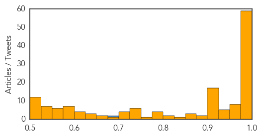
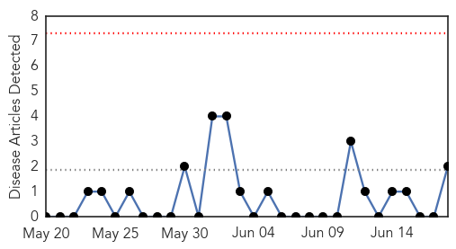

Unknown
30-Day Web Trend
12 alerts, 3 warnings
30-Day Twitter Trend
7 alerts, 11 warnings

Article Locations

Article Confidences
Top Articles:
- 1.000
- South Korea Reports 3 More MERS Deaths
- 1.000
- MERS outbreak: WHO chief says efforts in containing deadly virus ‘on very good footing’
- 1.000
- WHO Chief Voices Optimism Over South Korea MERS Outbreak
- 1.000
- South Korea Reports 3 More MERS Deaths
- 1.000
- Thailand confirms first MERS case as virus spreads in Asia
- 1.000
- WHO chief voices optimism over South Korea Mers outbreak, Government & Economy
- 1.000
- WHO chief voices optimism over S. Korea MERS outbreak
- 0.999
- Thailand confirms first case of MERS - Regional
- 0.999
- Thailand confirms first MERS case as virus spreads in Asia – BorneoPost Online
- 0.999
- Thailand confirms first MERS case as virus spreads in Asia
- 0.999
- (LEAD) S. Korea reports 3 more deaths from MERS, 3 new cases
- 0.999
- South Korea's MERS toll touches 23 with three more deaths
- 0.999
- Thailand reports first case of MERS
- 0.999
- Thailand confirms first MERS case as virus spreads in Asia
- 0.999
- South Korea: MERS Death Toll Now At 23
- 0.999
- (2nd LD) S. Korea reports 3 more deaths from MERS, 3 new cases
- 0.999
- (LEAD) S. Korea reports 3 more deaths from MERS, 3 new cases
- 0.999
- WHO chief Margaret Chan voices optimism over South Korea MERS outbreak
- 0.998
- Tourist first MERS case in Thailand
- 0.998
- WHO chief reassures South Korea as its MERS deaths reach 24
- 0.997
- MERS Death Toll Rises To 20 In South Korea
- 0.997
- The Heart of MERS in Seoul
- 0.997
- Thailand confirms first MERS case
- 0.997
- S. Korea reports 3 more deaths from MERS, 3 new cases
- 0.997
- The World On Arirang
- 0.996
- 3 more MERS patients die
- 0.996
- First MERS Case Confirmed in Thailand
- 0.996
- First case of MERS reported in Thailand
- 0.995
- Thailand Confirms Middle East Tourist Tests Positive for MERS
- 0.995
- WHO says MERS in S. Korea isn’t an emergency of international concern
- 0.995
- Thailand confirms its first case of MERS
- 0.994
- Thailand confirms first case of Mers as cost of South Korean patient in China put at 8 million yuan
- 0.993
- MERS lands in Thailand as Korea toll rises
- 0.993
- (MERS Virus) Three more South Koreans die, 165 infected
- 0.993
- Thailand confirms first MERS case as virus spreads in Asia
- 0.993
- South Korea reports three more deaths in MERS outbreak, three new cases
- 0.992
- South Korea’s Mers deaths reach 23
- 0.991
- MERS infections in S.Korea abate on lingering concerns - Xinhua
- 0.990
- Thailand reports first Mers case
- 0.990
- Korean Air hit by MERS outbreak
- 0.990
- South Korea’s MERS Outbreak could affect its Economic Recovery, says Moody’s
- 0.989
- First case confirmed in Thailand as man tests positive for disease
- 0.989
- The World On Arirang
- 0.988
- Thailand Confirms MERS Infection
- 0.986
- Number of MERS cases in South ...｜Society｜WCT
- 0.986
- 'Community transmission for MERS unlikely'
- 0.986
- WHO reassures South Korea over Mers
- 0.985
- Thailand’s first MERS case found in Bangkok
- 0.984
- MERS outbreak in S.Korea a 'wakeup call': WHO
- 0.984
- South Korea's MERS deaths reach 23
Showing top 50 articles...
Top Tweets:
- 0.708
- RT: Head of the World Health Organization reassures South Korea as MERS death toll reaches 23 a month into outbreak http://t.co/NAI4HHj…
- 0.708
- RT: Head of the World Health Organization reassures South Korea as MERS death toll reaches 23 a month into outbreak http://t.co/NAI4HHj…
- 0.682
- RT: 3 more MERS cases in SKorea's outbreak. Death toll is up to 23. For context: 44 people died from SARS in Toronto. htt…
- 0.584
- 3 more MERS cases in SKorea's outbreak. Death toll is up to 23. For context: 44 people died from SARS in Toronto. http://t.co/4e1Ikgvo9L
Pertussis
30-Day Web Trend
0 alerts, 0 warnings

30-Day Twitter Trend
0 alerts, 0 warnings

Article Locations

Article Confidences

Top Articles:
Top Tweets:
-
No tweets found for Jun 18, 2015